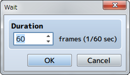

Timing
Wait

Function
Temporarily stops the event. While stopped, the player cannot perform any actions (excluding processes running in parallel).
Settings
- Duration
- Specify the time to stop the process in number of frames (1 to 999). 1 frame is equal to 1/60th of a second.